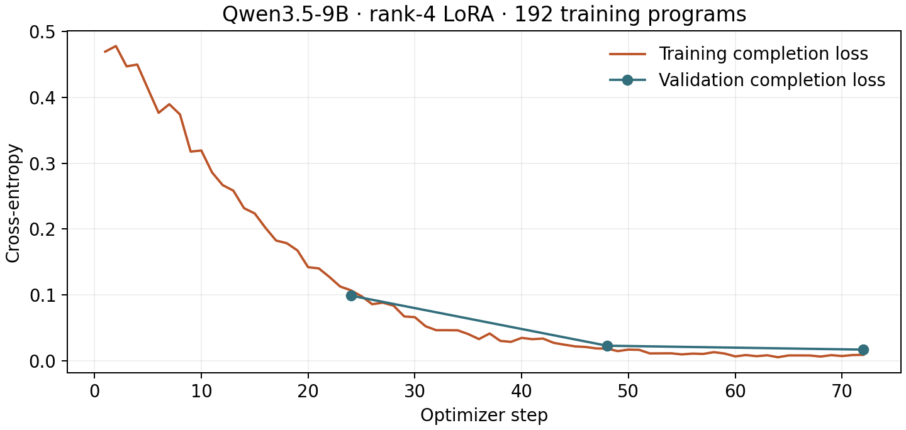

September 8, 2026 · post #4
Teaching Qwen to build tiny rooms
We fine-tuned Qwen3.5-9B on 192 procedural Blender programs. It produced 30/32 test renders; 18/32 passed our geometry checks. The completed pilot cost $7.82 on Compute.
A tiny bedroom looks straightforward: a bed, a wardrobe, a lamp, two walls. In code, those objects need dimensions, materials, positions, and a sensible relationship to the floor. A room can produce a convincing thumbnail while a shelf cuts through the floor or furniture extends beyond a wall.
We wanted to see whether a small collection of complete Blender programs could teach that structure to a 9B model. The adapter learned enough to render rooms consistently in our primary test. Geometry and robustness were harder.
Examples before reinforcement learning
Merve’s Blender challenge asks how to teach a small model to build rooms with more detail. Her reported GEPA and GRPO experiments motivated a supervised first test: show Qwen complete programs with multipart furniture, then measure what it can produce.
We wrote a procedural generator for four room families. Its demonstrations include beds with pillows, desks with monitors and keyboards, kitchens with hobs and sinks, and living rooms with televisions and lamps. We generated 192 training examples, 32 validation examples and 32 test examples, keeping palette variants of each layout group together. All 256 teacher programs executed, rendered and passed geometry checks. The model received text briefs and bpy targets; teacher images were used for quality control.
This is a narrow control. The programs share furniture primitives and a small layout grammar. There are four held-out test layout groups with eight correlated palette variants each. These are not 192 independently generated Astra examples, and this one-shot task differs from Merve’s multi-turn environment.
What changed
Both policies used the same test prompts, greedy decoding, a 4,096-token output cap and batches of eight on an H100. Blender supplied the camera and lighting. A completed render and a geometry-valid room are counted separately.
| Model | Rendered | Geometry valid | Token limit |
|---|---|---|---|
| BASE | 0/32 observed* | 0/32 observed* | 3/32 |
| SFT | 30/32 | 18/32 | 1/32 |
*One base case was stopped by the frozen guard for a valid material-slot operation, so that case is unmeasured. Lifting this restriction could add at most one base success. The remaining guard rejection imported a module outside the explicit task. The limitation is recorded here.
The adapter improved code execution on this task. All eight bedroom and eight kitchen cases passed geometry; no studio case passed, and two living-room cases passed. These palette variants are correlated. Geometry mistakes remain: in validation, shelf sides extended below the raised floor and a sofa crossed the room boundary; another program exhausted its token budget. Missing renders and incomplete programs count as failures.
The original operator guard also rejected ordinary Blender operations. We corrected it using validation programs, replayed the identical saved outputs for both models, and froze the evaluator before the test. The corrected validation comparison was:
| Model | Rendered | Geometry valid | Token limit |
|---|---|---|---|
| BASE | 0/8 | 0/8 | 0/8 |
| SFT | 7/8 | 5/8 | 1/8 |
Geometry checks use object names, evaluated bounds, support connectivity and polygon counts. They do not establish recognizability, collision freedom or aesthetic quality. The renders can be inspected directly; no independent preference score is claimed.
A small change exposed a larger limitation
The weak base results warranted a small follow-up on validation only. We appended the same Blender 4.5 notes to both policies: RGBA material inputs, supported bevel modifiers and leaving scene configuration to the evaluator. This was a post-hoc diagnostic, with the original geometry thresholds, decoding budget and saved weights.
| Model | Rendered | Geometry valid | Token limit |
|---|---|---|---|
| BASE | 1/8 | 0/8 | 0/8 |
| SFT | 0/8 | 0/8 | 0/8 |
The base control's one image was an empty scene. All eight adapter programs emitted a material helper that concatenated an RGB list and an alpha tuple, raising TypeError. The original validation used single-prompt generation, while this diagnostic used batches of eight. It exposes a failure under that variant, without isolating the effect of instructions from batching. The primary test above was neither changed nor repeated.
The training run
We kept the vision backbone and base weights frozen and trained a rank-4 LoRA adapter over the text projections for three epochs, with an effective batch of eight, learning rate 2e-4, cosine decay and bf16 weights. Prompt and padding tokens were excluded from the loss, and complete targets fit within 6,144 tokens. The base model and tokenizer revision were pinned.

The final checkpoint won by validation loss. Its 10.82 million adapter parameters were saved in bf16, downloaded, hash-verified and reloaded before evaluation. The training/validation loop took 37.16 minutes. The model card records the artifact identity and limitations.
What we spent, and how to reproduce it
The completed pilot cost $7.82 in Compute GPU charges: $0.51 for setup attempts and smoke runs, $5.24 for full SFT, $1.54 for the primary evaluation, and $0.53 for the API-hint diagnostic. The training/validation loop’s 37.16 minutes is only part of the billed work. Setup, model downloads, generation, rendering, and teardown also cost time.
This article freezes that completed pilot. A separately budgeted inference-only repair experiment is underway; its cost and unfinished results are outside the numbers here. The original seven runs have finalized receipts.
We hit two artifact-transfer problems while using Compute: an upload missing Content-Length and a large result exceeding the agent supervisor’s output buffer. A temporary authenticated transfer let us retain and verify the actual adapter. The execution record includes the run costs and workaround.
The reproduction guide contains the dataset generator, pinned environment, training launcher, and verification steps. Start by generating and checking the trusted teacher programs locally:
cd posts/blender-rooms
uv venv --python 3.11 .venv
uv pip install --python .venv/bin/python -r requirements.txt
.venv/bin/python rooms.py --output data
.venv/bin/python render.py --output artifacts
.venv/bin/python -m pytest -qThe saved adapter’s identity is recorded in the model card; weights are retained locally and have not been uploaded to a model registry. Pinned source snapshots, losses, raw outputs, and image provenance accompany the report. The anonymous A/B packet lets reviewers record and export their own choices.
What to try next
Our predeclared continuation gate required at least 80% validation geometry validity and positive independent visual preference. The adapter reached 5/8 on geometry, and independent review remains open. We therefore did not start GRPO or GEPA. The next tests are richer independently authored layouts and explicit repair feedback, with an untouched evaluation set beyond these shared furniture primitives. The useful result so far is a trained adapter and a concrete record of its failures.